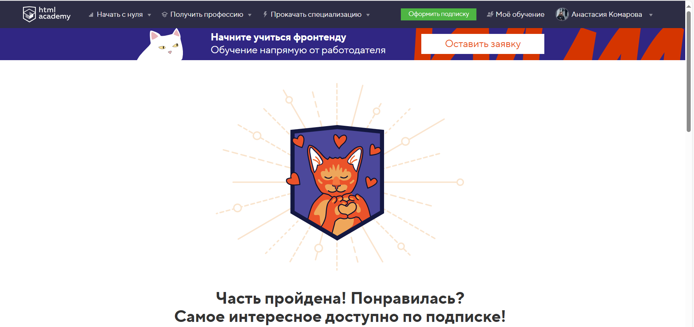
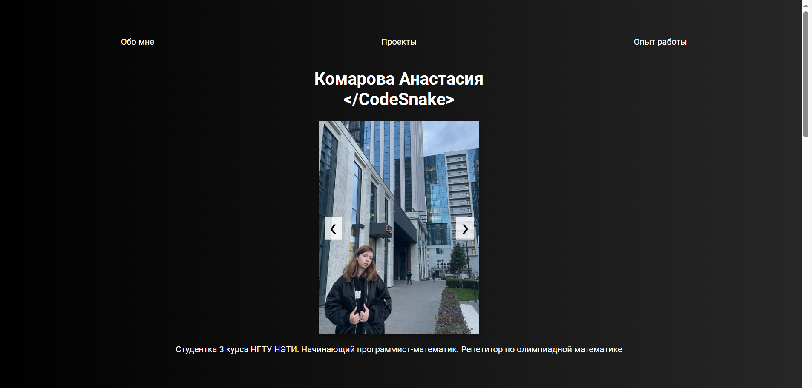
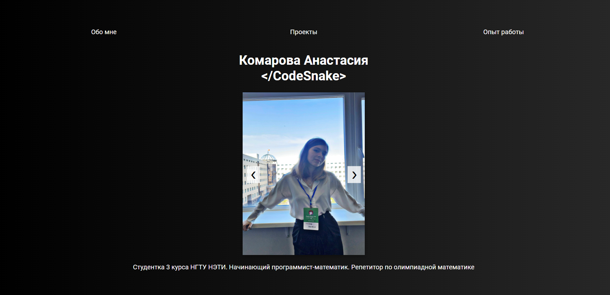
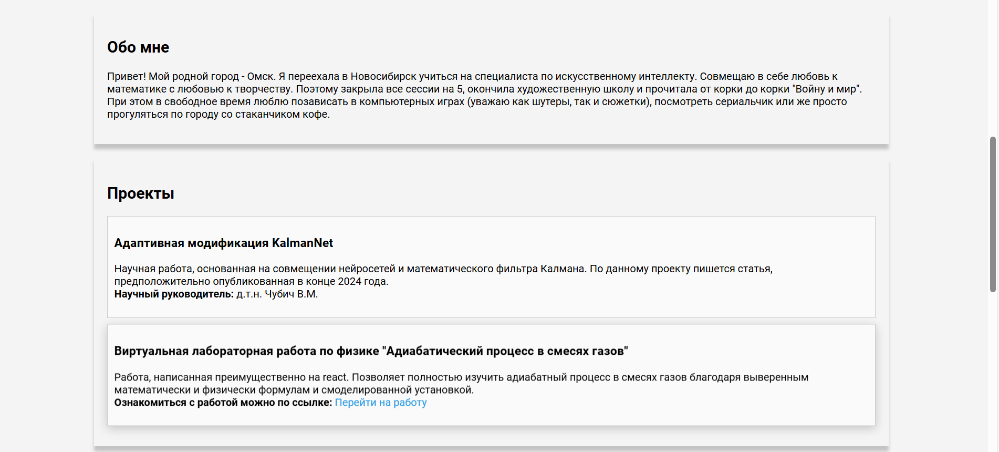
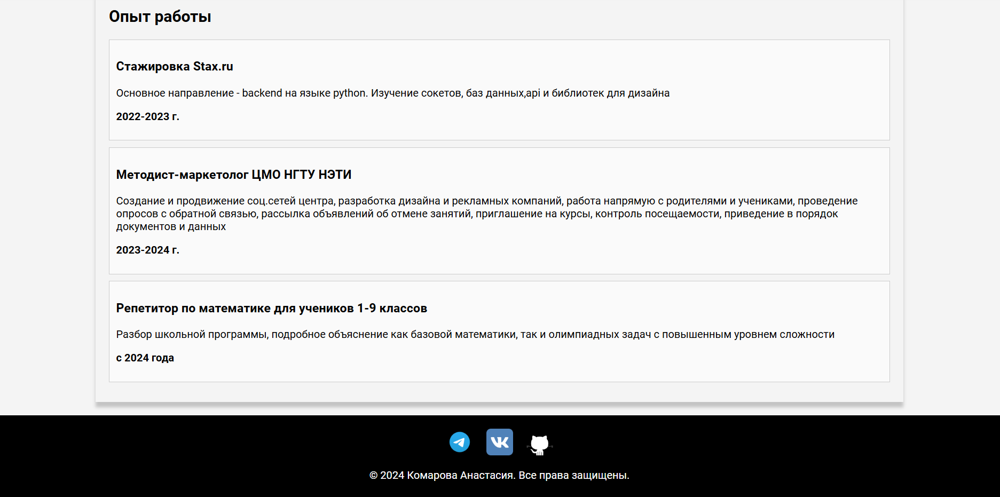

«Новосибирский государственный технический университет»

Министерство науки и высшего образования Российской Федерации
Федеральное государственное бюджетное образовательное учреждение высшего образования
«Новосибирский государственный технический университет»
Лабораторная работа №2
по дисциплине "Основы web-программирования"
Веб-верстка
Кафедра теоретической и прикладной информатики
Новосибирск
2024
Цель работы:
Изучение основ веб-верстки и создание HTML-страницы с заданными атрибутами.
Что было сделано в данной работе:
1. Прошла бесплатные задания на сайте htmlacademy.ru

2. Сформируйте страницу о себе с текстом, ссылками и фотографикой.
Перейти на страницу обо мне
На странице присутствует так называемая карусель фото, также есть информация обо мне, моих проектах и опыте работе. В самом низу страницы есть ссылки на социальные сети




Вывод:
В ходе выполнения лабораторной работы я углубила свои знания в веб-верстке, повторила основы с HTML, CSS и JS.